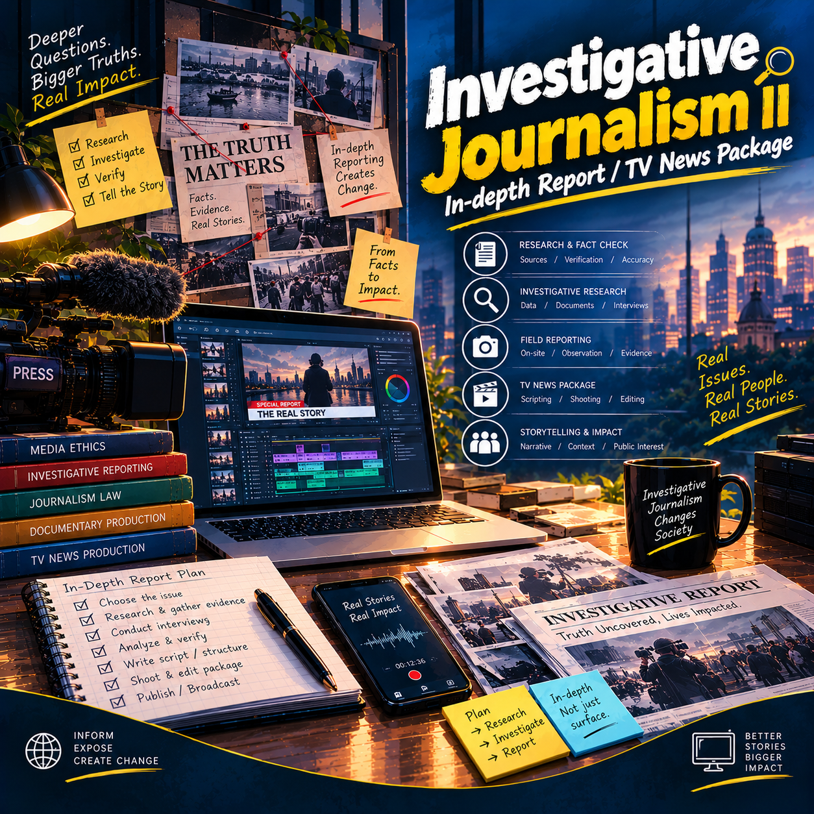
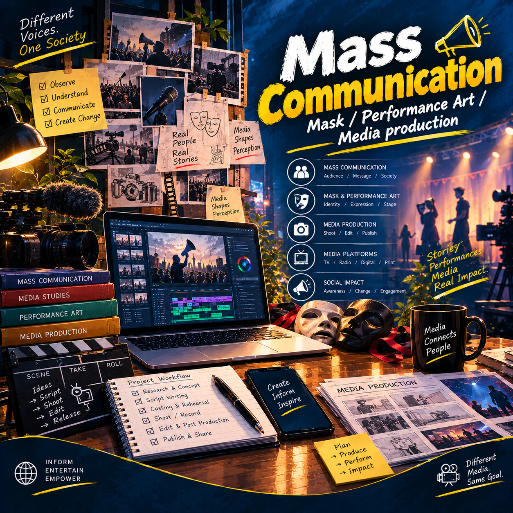
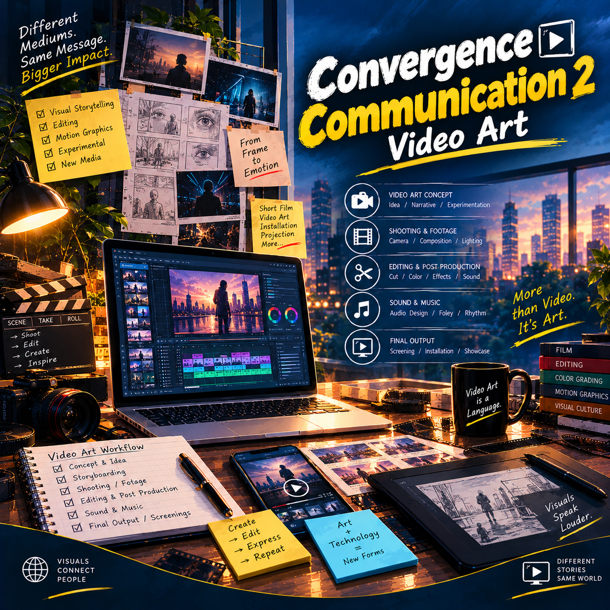
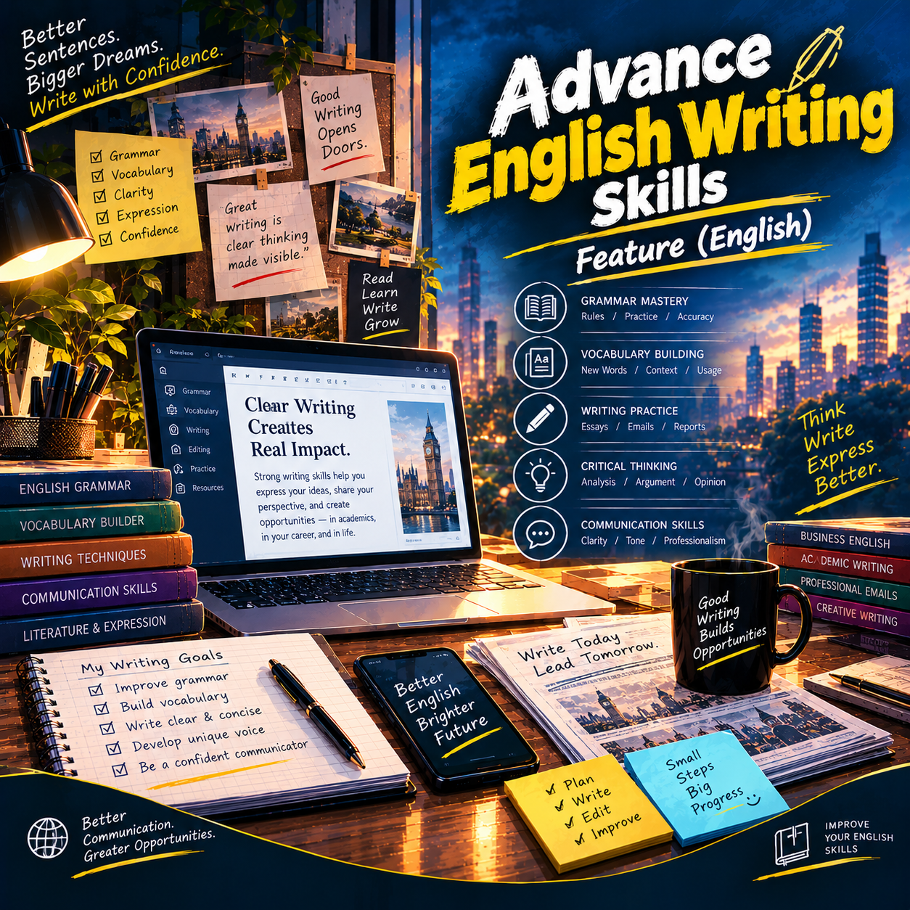

01↗
01↗MSJ 3151 MAJOR COURSE
In-depth Report
A reporting project built around detailed inquiry, evidence and context.
ACADEMIC & CREATIVE ARCHIVE
A curated collection of university projects exploring journalism, research, writing, communication and creative media.
EXPLORE THE COLLECTION ↓01 / JOURNALISM & REPORTING
Selected work from major coursework, presented with direct access to each original project PDF.
01↗MSJ 3151 MAJOR COURSE
A reporting project built around detailed inquiry, evidence and context.
 02↗
02↗MSJ 3152 MAJOR COURSE
A story package combining journalistic content with multimedia formats.
 03↗
03↗MSJ 3251 MAJOR COURSE
Mobile journalism practice focused on reporting and producing on the go.
 04↗
04↗MSJ 3252 MAJOR COURSE
Journalistic translation shaped by clarity, accuracy and audience needs.
MSJ 3253 MAJOR COURSE
Exploring how data can support journalistic investigation and storytelling.
MSJ 4151 MAJOR COURSE
An investigative reporting project based on questions, verification and research.

07↗MSJ 4152 MAJOR COURSE
A continued exploration of in-depth reporting and investigative storytelling.
02 / WRITING · COMMUNICATION · CREATIVE MEDIA
A diverse collection of research, feature writing, communication and artistic projects from common coursework.
 08↗
08↗MSJ 1201 COMMON COURSE
A research plan built around a focused question, objectives and methodology.
 09↗
09↗GED 1203 COMMON COURSE
Feature writing in Bangla, combining narrative detail and human perspective.
 10↗
10↗MSJ 2101 COMMON COURSE
A blog project examining technology and its relationship with communication.
 11↗
11↗MSJ 2102 COMMON COURSE
Creative exploration through digital art and installation-based practice.

12↗MSJ 2201 COMMON COURSE
A practical creative project spanning performance, visual expression and media.

13↗MSJ 2202 COMMON COURSE
An experimental moving-image project using visual storytelling and form.

14↗GEF 1202 COMMON COURSE
English feature writing shaped around a clear angle and engaging narrative.
THE WORK CONTINUES